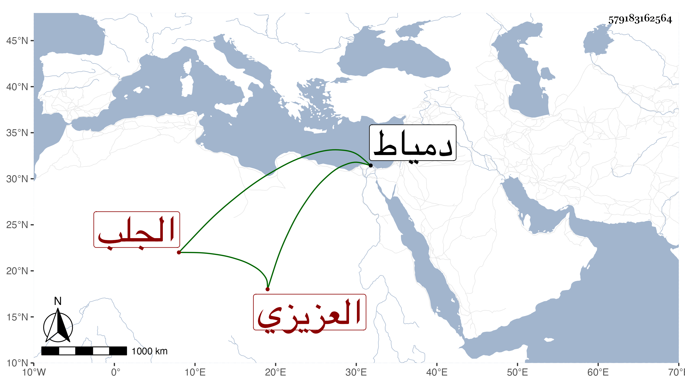

0902Sakhawi.DawLamic.ITO20230111-ara1.EIS1600.579183162564
Biography ID: 579183162564
1031
ابنة قرقماس الجلب زوج تمراز العزيزي رأس نوبة النوب ، ماتت في يوم الجمعة تاسع ذي القعدة سنة تسع وسبعين وهرع الناس للصلاة عليها قبل الجمعة في سبيل المؤمني وكان ممن شهدها السلطان ودفنت بتربته وقرر هناك جماعة يحضرون كل يوم للقراء مع شيخ التربة ، وحج عنها الشهاب البيجوري نزيل دمياط رحمها الله .
